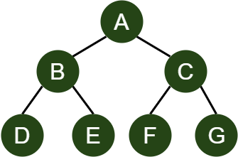

A binary tree is a type of hierarchical data structure, made up of nodes. The name "binary" tree comes from the defining characteristic where each node in the tree can have a maximum of two children. Binary trees are useful in many situations, such as with sorting or search, or for handling hierarchical data such as the file system in a home computer.
To traverse a binary tree means to visit every node in it, and this can be done using multiple different methods. There are two main types of traversals: Depth First, and Breadth First.
There are three different depth-first traversal methods:
InOrder traversals are carried out from left to right, traversing the leftmost subtree first, then the parent node, then the right subtree.
With InOrder traversal, the nodes in this tree would be visited in the order D-B-F-E-A-C
The nodes in this tree would be visited in the order D-B-E-A-F-C-G
Memorising tips:
An easy way to remember this traversal is "Left-Root-Right".
The traversal is "in order" of how you would usually read, left to right.
PreOrder traversals are carried out starting from the root node. The parent node is visited first, then the left subtree is traversed, then the right subtree.
With PreOrder traversal, the nodes in this tree would be visited in the order A-B-D-E-F-C
The nodes in this tree would be visited in the order A-B-D-E-C-F-G
Memorising tips:
An easy way to remember this traversal is "Root-Left-Right".
The root node is visited "pre" the other nodes.
PostOrder traversals visit the root node last. The left subtree is traversed first, followed by the right subtree, and then the root.
With PostOrder traversal, the nodes in this tree would be visited in the order D-F-E-B-C-A
The nodes in this tree would be visited in the order D-E-B-F-G-C-A
Memorising tips:
An easy way to remember this traversal is "Left-Right-Root".
The root node is visited "post" the other nodes.
The breadth-first traversal of a tree is known as "level order", this is because the traversal is carried out based on the levels of the tree. The nodes are visited from left to right for every level of the tree from the root node downwards.
This tree would be traversed in the order A-B-C-D-E-F
This tree would be traversed in the order A-B-C-D-E-F-G
Memorising tips:
Breadth-first traversal traverses the breadth (width) of the tree.
It can also help to remember it as "level order" traversal as this can help to remind you that
the traversal consists of traversing each level in order.
Now that you've learned all about traversals, why not test your knowledge?